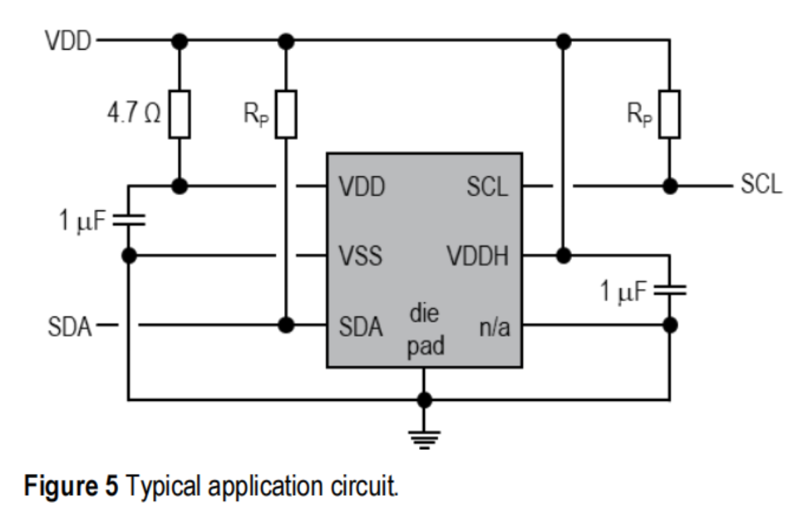

该文章解析I2C和SPI总线中电阻的作用与选型。I2C总线因SDA、SCL为开漏输出，需上拉电阻确保空闲时为高电平，阻值选1-10kΩ（常见4.7kΩ等）、功率0.125-0.25W。SPI总线的电阻用于防信号反射、匹配阻抗及稳定多从设备通信，CS线上拉/下拉电阻选1-10kΩ，终端匹配电阻按传输线阻抗选50-100Ω左右，选型需结合通信速率等因素。
I2C 与 SPI 线路中电阻的作用及选型
在数字通信领域，I2C 和 SPI 总线被广泛应用，而它们的线路设计中都有电阻的使用，这些电阻虽然小，却发挥着至关重要的作用，在画原理图的时候，我们经常遇到这种

这是一个气体传感器C2874215的说明书，它使用的是I2C协议，在前面讲过怎么分辨这几种协议：
在这幅图中我们可以看到，SDA和SCL都接了上拉电阻，为什么呢？
这也是选型的时候需要注意的问题，这个电阻需要选多大的呢？
下面就围绕这个问题讲一下。
I2C 总线的上拉电阻
原因
I2C 总线采用开漏（开集电极）结构的数据线（SDA）和时钟线（SCL）。开漏输出的特点是只能将信号拉低，不能主动拉高，这就需要外部的上拉电阻来确保信号线在没有被拉低时处于高电平状态，从而实现信号的正常传输。当总线空闲时，上拉电阻将 SDA 和 SCL 拉高，使得总线处于高电平等待状态。
选型
- 阻值选择 ：I2C 总线数据传输速率与上拉电阻阻值密切相关。一般选择在 1 - 10kΩ 范围内。若阻值过小，虽然能加快信号上升沿，但会增加电源功耗；阻值过大则会使上升时间变长，影响数据传输速度。常见的阻值有 1.5kΩ、2.2kΩ、4.7kΩ 等。
- 功率选择 ：根据总线上的设备数量和工作电流来确定上拉电阻的功率。一般情况下，0.125W - 0.25W 的普通电阻即可满足要求。
SPI 总线的电阻
原因
在 SPI 通信中，虽然主设备和从设备之间通常采用推挽输出（可输出高、低电平），但为了防止信号反射、匹配阻抗以及在多从设备连接时保证信号的稳定性和完整性，也会使用电阻。
- 防止信号反射 ：当信号在传输线上传播遇到阻抗不匹配的情况时，会产生反射信号，影响通信质量。在 SPI 总线的 MISO（从设备数据输出）和 MOSI（主设备数据输出）线上适当接入电阻，可以吸收反射信号，减少其对总线的干扰。
- 匹配阻抗 ：通过在 SPI 总线线上接入合适阻值的电阻，使传输线的特性阻抗与源端和负载端的阻抗相匹配，降低信号的反射系数，提高信号的传输效率和稳定性。
- 多从设备连接 ：在 SPI 总线连接多个从设备时，每个从设备的使能信号（CS）线上接入上拉或下拉电阻，确保在未被选中时，从设备不会干扰总线通信。
选型
- 上拉 / 下拉电阻 ：对于 SPI 总线上的 CS 线，在选择上拉或下拉电阻时，阻值通常在 1kΩ - 10kΩ 范围内。如使用上拉电阻，阻值过小会导致 CS 线在未选中时功耗较大；阻值过大则可能使 CS 信号的电平转换速度变慢。一般可以选择 10kΩ 左右的上拉电阻。
- 终端匹配电阻 ：用于防止信号反射和匹配阻抗的终端匹配电阻，其阻值应与传输线的特性阻抗相匹配。常见的传输线特性阻抗在 50Ω - 100Ω 之间，因此终端匹配电阻可选择 75Ω、100Ω 等。
在实际应用中，需要综合考虑通信速率、传输距离、设备功耗、工作环境等因素来精确选择电阻的阻值和功率，以保证 I2C 和 SPI 总线通信的可靠性和稳定性。